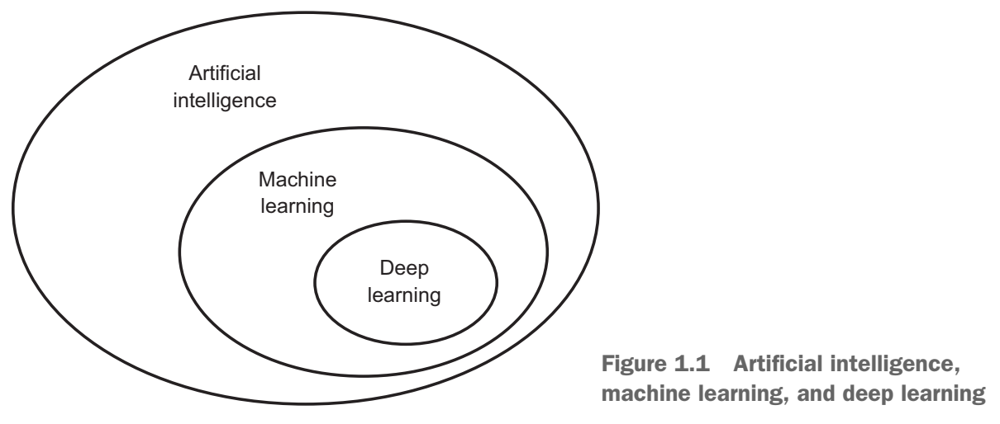
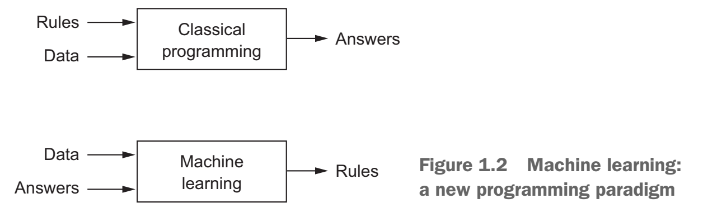

Deep Learning
Workshop
Mahmood Amintoosi
پاییز ۹۸
Source book
Deep Learning with Python,by: FRANÇOIS CHOLLET

https://www.manning.com/books/deep-learning-with-python
LiveBook
Github: Jupyter Notebooks
Chapter 1
What is deep learning?
Applications
Google Street-View (and ReCaptchas)


Machine learning vs. Classical programming
Machine learning: a new programming paradigm
Why Computer Vision is difficult?

How Computer see the above picture?

Deep Learning
- Neural Networks
- Multiple layers
- Fed with lots of Data
History
- 1980+ : Lots of enthusiasm for NNs
- 1995+ : Disillusionment = A.I. Winter (v2+)
- 2005+ : Stepwise improvement : Depth
- 2010+ : GPU revolution : Data
Who is involved
| Hinton (Toronto) |  |
|
| LeCun (NYC) |  |
|
| Universities | Bengio (Montreal) |  |
| Baidu | Ng (Stanford) |
Andrew Ng:
“AI is the new electricity.”
2011, Image Classification
 ImageNet challenge was difficult at the time, consisting of classifying highresolution color images into 1,000 different categories after training on 1.4 million images
ImageNet challenge was difficult at the time, consisting of classifying highresolution color images into 1,000 different categories after training on 1.4 million images
Deep Learning started to beat other approaches...
- In 2011, Dan Ciresan from IDSIA began to win academic image-classification competitions with GPU-trained deep neural networks
- In 2011, the top-five accuracy of the winning model, based on classical approaches to computer vision, was only 74.3%.
- In 2012, a team led by Alex Krizhevsky and advised by Geoffrey Hinton was able to achieve a top-five accuracy of 83.6%—a significant breakthrough
- By 2015, the winner reached an accuracy of 96.4%, and the classification task on ImageNet was considered to be a completely solved problem
What makes deep learning different?
It completely automates what used to be the most crucial step in a machine-learning workflow:feature engineering
Why deep learning? Why now?
In general, three technical forces are driving advances:
- Hardware NVIDIA GPUs, Google TPUs
- Datasets and benchmarks Flickr, YouTube videos and Wikipedia
- Algorithmic advances
- Better activation functions
- Better weight-initialization schemes
- Better optimization schemes
Before we begin: the mathematical building blocks of neural networks
We will discuss:
- A first example of a neural network
- Tensors and tensor operations
- How neural networks learn via backpropagation and gradient descent
We will use Python in examples
| Python Data Science Handbook. Essential Tools for Working with Data by: Jake VanderPlas |

|
- Read the book in its entirety online at https://jakevdp.github.io/PythonDataScienceHandbook/
- The book's Jupyter notebooks: https://github.com/jakevdp/PythonDataScienceHandbook
A first look at a neural network
Digit Classification
2.1-a-first-look-at-a-neural-network
Digits Classification
import keras
from keras.datasets import mnist
(train_images, train_labels), (test_images, test_labels) = mnist.load_data()
from keras import models
from keras import layers
network = models.Sequential()
network.add(layers.Dense(512, activation='sigmiod', input_shape=(28 * 28,)))
network.add(layers.Dense(10, activation='sigmiod'))
network.compile(optimizer='sgd',
loss='mean_squared_error',
metrics=['accuracy'])
train_images = train_images.reshape((60000, 28 * 28))
train_images = train_images.astype('float32') / 255
test_images = test_images.reshape((10000, 28 * 28))
test_images = test_images.astype('float32') / 255
from keras.utils import to_categorical
train_labels = to_categorical(train_labels)
test_labels = to_categorical(test_labels)
network.fit(train_images, train_labels, epochs=5, batch_size=128)
Compilation step
- An optimizer—The mechanism through which the network will update itself based on the data it sees and its loss function.
- A loss function—How the network will be able to measure its performance on the training data, and thus how it will be able to steer itself in the right direction.
- Metrics to monitor during training and testing—Here, we’ll only care about accuracy (the fraction of the images that were correctly classified)
Data representations for neural networks
Tensors

Don’t confuse a 5D vector with a 5D tensor! A 5D vector has only one axis and has five dimensions along its axis, whereas a 5D tensor has five axes (and may have any number of dimensions along each axis).
Dimensionality can denote either the number of entries along a specific axis (as in the case of our 5D vector) or the number of axes in a tensor (such as a 5D tensor), which can be confusing at times. In the latter case, it’s technically more correct to talk about a tensor of rank 5 (the rank of a tensor being the number of axes), but the ambiguous notation 5D tensor is common regardless.
2.2.6 Manipulating tensors in Numpy
my_slice = train_images[:, 14:, 14:]
2.2.7 The notion of data batches
batch = train_images[128 * n:128 * (n + 1)]
2.2.8 Real-world examples of data tensors
- Vector data—2D tensors of shape
- Timeseries data or sequence data—3D tensors of shape
- Images—4D tensors of shape
- Video—5D tensors of shape
(samples, features)
(samples, timesteps, features)
(samples, height, width, channels) or
(samples, channels, height, width)
(samples, frames, height, width, channels) or
(samples, frames, channels, height, width)
The gears of neural networks: tensor operations
- Element-wise operations
- Broadcasting
- Tensor dot
- Tensor reshaping
Tensor Operations
2.3-Tensor-Operations
import numpy as np
x = np.random.random((3, 2))
print(x)
y = np.ones((2,))/2
print(y)
z = np.maximum(x, y)
print(z.shape)
print(z)
z = x+y
print(z)
z = x*y
print(z)
A geometric interpretation of deep learning

The engine of neural networks: gradient-based optimization
- What’s a derivative?
- Derivative of a tensor operation: the gradient
- Stochastic gradient descent
- Chaining derivatives: the Backpropagation algorithm
Intro to optimization in deep learning
Various Gradient Descent Algorithms
Stochastic Gradient Descent

|
TensorFlow Operations
Auto Gradient in TF2
import tensorflow as tf
x = tf.constant(3.0)
with tf.GradientTape(persistent=True) as g:
g.watch(x)
y = x * x
z = y * y
dy_dx = g.gradient(y, x) # 6.0
dz_dx = g.gradient(z, x) # 108.0 (4*x^3 at x = 3)
dz_dy = g.gradient(z, y) # 18.0 (2*y at y = 9)
del g # Drop the reference to the tape
print(dy_dx)
print(dz_dx)
print(dz_dy)
tf.Tensor(6.0, shape=(), dtype=float32)
tf.Tensor(108.0, shape=(), dtype=float32)
tf.Tensor(18.0, shape=(), dtype=float32)
Understanding convolutional neural networks
- Convolution arithmetic tutorial
- Machine Learning and AI - Bangalore Chapter
- Counting No. of Parameters in Deep Learning Models by Hand

5.1 - Introduction to convnets
MNIST Classification (Included with Keras)
Overall Model:

5.1 - Introduction to convnets
MNIST Classification, TensorFlow Code
import keras
from keras import layers
from keras import models
model = models.Sequential()
model.add(layers.Conv2D(32, (3, 3), activation='relu', input_shape=(28, 28, 1)))
model.add(layers.MaxPooling2D((2, 2)))
model.add(layers.Conv2D(64, (3, 3), activation='relu'))
model.add(layers.MaxPooling2D((2, 2)))
model.add(layers.Conv2D(64, (3, 3), activation='relu'))
model.add(layers.Flatten())
model.add(layers.Dense(64, activation='relu'))
model.add(layers.Dense(10, activation='softmax'))
5.1 - Introduction to convnets
Number of Parameters
_________________________________________________________________ Layer (type) Output Shape Param # ================================================================= conv2d_1 (Conv2D) (None, 26, 26, 32) 320 _________________________________________________________________ max_pooling2d_1 (MaxPooling2 (None, 13, 13, 32) 0 _________________________________________________________________ conv2d_2 (Conv2D) (None, 11, 11, 64) 18496 _________________________________________________________________ max_pooling2d_2 (MaxPooling2 (None, 5, 5, 64) 0 _________________________________________________________________ conv2d_3 (Conv2D) (None, 3, 3, 64) 36928 _________________________________________________________________ flatten_1 (Flatten) (None, 576) 0 _________________________________________________________________ dense_1 (Dense) (None, 64) 36928 _________________________________________________________________ dense_2 (Dense) (None, 10) 650 ================================================================= Total params: 93,322
 More about architecture and number of parameters:
More about architecture and number of parameters:
 Source:
Counting No. of Parameters in Deep Learning Models by Hand
Source:
Counting No. of Parameters in Deep Learning Models by Hand
 Source:
Counting No. of Parameters in Deep Learning Models by Hand
Source:
Counting No. of Parameters in Deep Learning Models by Hand
--
Persian Digits Classification (Not included with Keras)
import keras
from keras import layers
from keras import models
model = models.Sequential()
model.add(layers.Conv2D(32, (3, 3), activation='relu', input_shape=(28, 28, 1)))
model.add(layers.MaxPooling2D((2, 2)))
model.add(layers.Conv2D(64, (3, 3), activation='relu'))
model.add(layers.MaxPooling2D((2, 2)))
model.add(layers.Conv2D(64, (3, 3), activation='relu'))
model.add(layers.Flatten())
model.add(layers.Dense(64, activation='relu'))
model.add(layers.Dense(10, activation='softmax'))
5.2 - Using convnets with small datasets
Classify Dogs vs Cats (Not included with Keras)

5.2 - Using convnets with small datasets
Classify Dogs vs Cats (Building from scrach)

5.2 - Using convnets with small datasets
Classify Dogs vs Cats (Building from scrach)
model = models.Sequential()
model.add(layers.Conv2D(32, (3, 3), activation='relu',
input_shape=(150, 150, 3)))
model.add(layers.MaxPooling2D((2, 2)))
model.add(layers.Conv2D(64, (3, 3), activation='relu'))
model.add(layers.MaxPooling2D((2, 2)))
model.add(layers.Conv2D(128, (3, 3), activation='relu'))
model.add(layers.MaxPooling2D((2, 2)))
model.add(layers.Conv2D(128, (3, 3), activation='relu'))
model.add(layers.MaxPooling2D((2, 2)))
model.add(layers.Flatten())
model.add(layers.Dense(512, activation='relu'))
model.add(layers.Dense(1, activation='sigmoid'))
LeNet, AlexNet, VGGNet, GoogLeNet, ResNet, ZFNet


.jpg)
.jpg)
.jpg)
Neural style transfer
- My Pages at: mamintoosi.ir: Neural Style Transfer, Fast Style Transfer
- Additional outputs on my Github: Foxes
- TensorFlow documentation
Generative Adversarial Networks
thispersondoesnotexist.com


https://deepfakedetectionchallenge.ai/